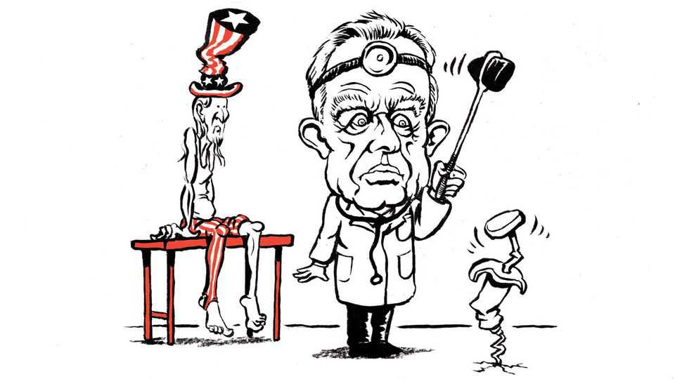

United States | Lexington

A year ago, when Senator Bill Cassidy, the Republican chairman of the committee overseeing the Department of Health and Human Services, cast a decisive vote to support Robert F. Kennedy junior as its secretary, he said Mr Kennedy had promised not to delete from a federal website a statement that vaccines do not cause autism. Mr Kennedy has kept the letter of his promise. But in November he appended an asterisk, noting the statement “has not been removed due to” the agreement with Mr Cassidy.
On a less passive-aggressive, more forthrightly damaging note, the site now adds that “the statement ‘Vaccines do not cause autism’ is not an evidence-based claim” because “studies have not ruled out” the possibility. Thus, by insisting the negative has not been proved—albeit without providing evidence for his pet theory of the menace of life-saving vaccines—does Mr Kennedy play his role as Donald Trump’s secretary of doubt in established science and credentialled experts, of doubt in anything but the wisdom of Mr Kennedy’s own corrosive doubt.
The story of immigration and Mr Trump’s return to the White House is straightforward: President Joe Biden ignored chaos at the southern border for two years, refuelling Mr Trump’s favourite political vehicle for him. The story of immunisation and Mr Trump’s re-election is more complex, and its consequences, though not yet as clear, may well prove even more dire. Unlike Kristi Noem, who as secretary of homeland security is delivering the mass deportation Mr Trump promised, Mr Kennedy is taking the MAGA movement and domestic policy into uncharted, and rather weird, territory.
The covid-19 pandemic helped doom Mr Trump’s first term. Yet it yielded his greatest achievement, the whirlwind development of vaccines that saved countless lives. As a result, the episode also went on to supply the most revealing index of Mr Trump’s hunger to win. For a man given to hyperbolising if not inventing achievements, it must be agony to distance himself, as he has, from a true historic accomplishment. But it was Mr Biden who went on to vaccinate people by the tens and then hundreds of millions. And it was under Mr Biden that resistance to mandatory vaccines, and to other pandemic-era measures such as masking and lockdowns, began to grow. Mr Trump spotted the political opening as the Biden administration overreached in defending Americans against covid.
Schools stayed closed for too long, businesses suffered, public debt surged and inflation began to find its grip. Social-media platforms banned posts deemed heretical by the administration, such as that the virus might have originated in a Chinese lab. The legacy media, out of credulousness or partisanship, largely failed to question draconian public-health measures. More than a thousand medical experts signed a letter condemning protests against lockdowns in part as “rooted in white nationalism”. As such experts struggled with an uncertain global threat, they could sound more than a little condescending. “What you’re seeing as attacks on me, quite frankly, are attacks on science,” Dr Anthony Fauci, Mr Biden’s chief medical adviser, said in 2021. (Democrats justly mock Mr Trump for his hubris, but they have yet to reckon with their own failures of humility, empathy and curiosity.)
It was in this context that Mr Kennedy decided to run for president. His name and his background as a crusading environmentalist gave him some appeal on the left, but his disdain for established science—the covid vaccine was “the deadliest vaccine ever made”, he said—helped endear him to Mr Trump’s populist base. Mr Trump attacked him as “a Radical Left Liberal” and “Open-Border Advocate”. Mr Kennedy called Mr Trump “a terrible president” who “didn’t stand up for the Constitution”. Then Mr Kennedy dropped out and endorsed Mr Trump. Mr Kennedy later said he was promised control of the health agencies.
In deference to Mr Trump’s conflicting priorities Mr Kennedy has backed off from some of his regulatory passions, such as banning certain pesticides or combating climate change. But having said he would let Mr Kennedy “go wild on health”, Mr Trump has kept his word. The result has been the Make America Healthy Again movement: rightist populism and leftist whole-Earthism have found common ground in healthy eating, exercise, the benefits of psychedelics, and good old-fashioned American paranoia about such shadowy government undertakings as putting fluoride in drinking water and vaccines in children.
Upon the vast, intricate, profitmaking medical establishment, Mr Kennedy is now focusing suspicions of bad faith honed by a lifetime’s training in detecting conspiracies, from a childhood blighted by assassinations to a career as a trial lawyer battling toxins spread by oil and coal companies. He has made a punchbag of the Centres for Disease Control and Prevention, calling it the “most corrupt” government agency. He has replaced the 17 members of its committee responsible for setting vaccination schedules and reconstituted it with vaccine sceptics. He has eliminated $1.2bn in federal grants to develop mRNA vaccines (a technology that proved wonderfully effective against covid).
Mr Kennedy likes to say people should do their own research, because trusting experts is the stuff not of science but of totalitarianism and religion. You can sense the political appeal, the superficial compliment to Americans’ intelligence. “I don’t tell people to trust me,” he told the Atlantic last autumn. “I tell people, ‘Don’t trust me.’” If only he had told Senator Cassidy that. Now it is too late. He is in charge, and even those Americans who reject his cynicism will live in a country with fewer vaccine breakthroughs than it might have had, and more unvaccinated people. ■
Subscribers to The Economist can sign up to our Opinion newsletter, which brings together the best of our leaders, columns, guest essays and reader correspondence.